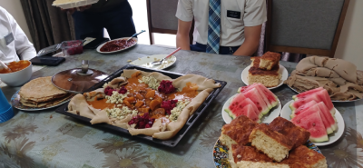
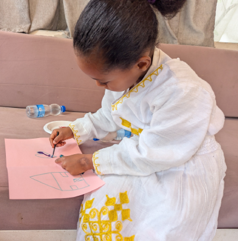
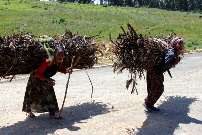
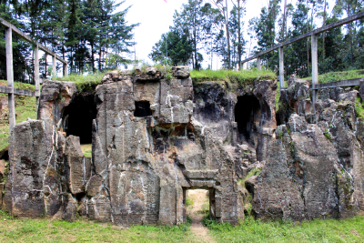
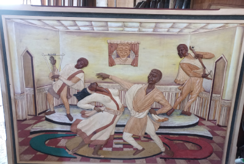
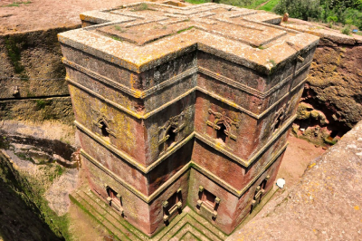

Ethiopia’s culture is as vast and diverse as its landscape. Over thousands of years, several languages, traditions, cultures, and more have formed. With over 80 ethnic groups and those thousands of years of development, there is always more to learn about this amazing place, its people, and their culture.

Ethiopia has a wide variety of foods, but most of it is eaten on a soggy flatbread called injira. Injira is made from a grain called teff, and people put several different kinds of wet (ወጥ) on it. Wet is the Amharic word for food that is eaten on injira. There are several kinds of wet that are vegetarian, and several kinds that include meat. It is common to eat meat raw!

While the clothes vary with different tribes, they are often white with colored patterns embroidered on. Different tribes have different colors, and different patterns. Outside of the traditional shirts or suits and pants worn by men and the traditional dresses worn by women, there are also religious clothes, such as hijabs for muslim women and shammas for orthodox women.

There are several tribes in Ethiopia. The main ones are Oromo, Amhara, Tigray, Somali, and Sidama, but there are also many others such as Gurage and Wolayta. These tribes all have their own languages, and their own culture, dance, food, etc. Despite all the tribes having one leader, conflict arises between tribes and government, as well as between tribes and other tribes.

Ethiopia is one of the world's oldest civilizations, with a history stretching back thousands of years. It is well known for preserving its independence during the colonial era. In 1896, Ethiopia fought off Italian forces in the Battle of Adwa, sending the invaders back to their "Mamma Mias". Although Italy would later occupy Ethiopia during World War II, the occupation was short-lived, and Ethiopia regained its freedom in 1941.

Ethiopia is home to a rich variety of traditions that reflect the country's long history and diverse cultures. Hospitality is highly valued, and guests are often welcomed with food, coffee, and warm conversation. One of the most famous traditions is the Ethiopian coffee ceremony, a social gathering in which coffee beans are roasted, brewed, and shared among family and friends. Although traditions vary among Ethiopia's many ethnic groups, respect for family, community, and cultural heritage is vital to all Ethiopian cultures.

There are several notable places in Ethiopia. The capital city is Addis Ababa, though it is pronounced more like Adis Abeba. There are several places that draw tourists though, such as the rock-hewn churches in Lalibela, or the castles in Gondor. There is beauty to be found all over Ethiopia, from the small villages around Tula, to the larger cities like Addis Ababa and Gondor.
{kind=link}
{kind=link}
{kind=link}
{kind=link}
{kind=link}
{kind=link}